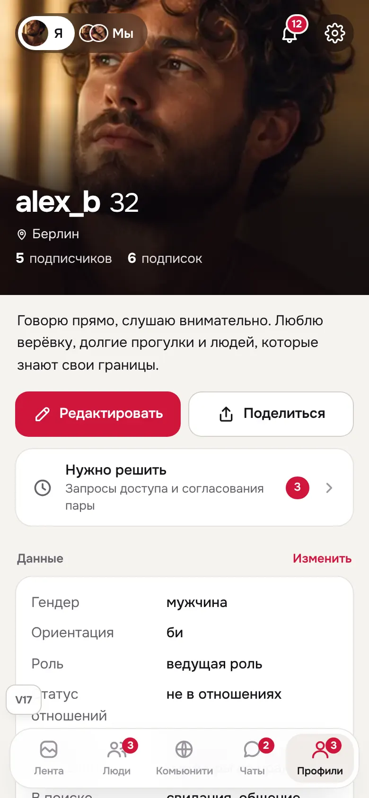
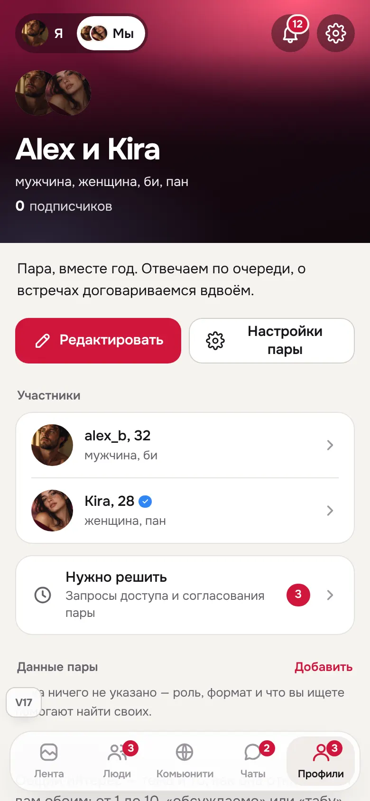
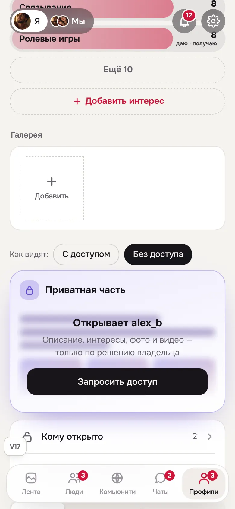
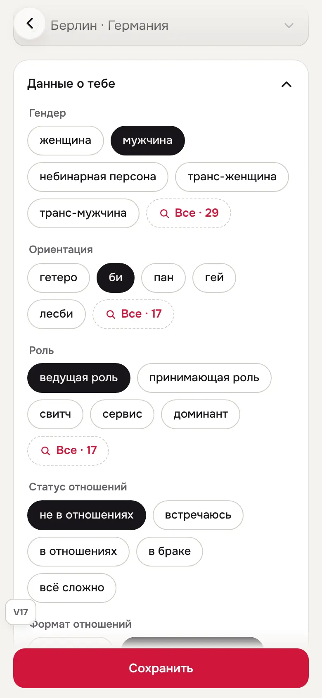

FetUre V17 — один профиль
V17 — копия V14, изменена только вкладка «Профиль». Раньше один и тот же профиль жил на трёх экранах: сводка во вкладке, «Как видят» (копия с неработающими кнопками) и редактор. Интересы были в трёх местах, галерея — в двух, у пары — свои карточка, превью и настройки. Теперь вкладка — это сам профиль: ровно то, что видят другие, плюс управление на месте.
V14 сохранена без изменений: public/prototype-v14.html. Журнал — docs/design-reference/V17-CHANGELOG.md. Контракт — tests/prototype-v17-contract.mjs: он прогоняет все правила V13 и V14 на файле V17 и добавляет проверки ниже.
Что было не так в V14
| Что | Где жило в V14 | V17 |
|---|---|---|
| Профиль | карточка во вкладке → «Как видят» (P03) → редактор (P02, ещё и со своей кнопкой «Как видят») | вкладка = профиль; один редактор |
| Интересы | вкладка (4 + «Ещё»), превью (6 + «Ещё»), редактор (весь список), «Все» | один ряд в профиле, нажатие меняет интерес сразу; «Все» — полный список |
| Галерея | вкладка и превью | один раз, в профиле |
| Приватная часть | превью (вуаль), редактор, отдельный P04, «Доступы» | в профиле, с переключателем «Как видят: с доступом / без доступа» |
| Пара | вторая карточка, своё превью Q03, свой редактор | переключатель «Я / Мы» на той же странице |
| Активность | список «Мои публикации/события…» повторял вкладки профиля | публикации и заметки — во вкладках профиля; внизу короткий список «Видишь только ты» |
Принятые решения
1. Вкладка «Профиль» — это сам профиль
Сверху — обложка, имя, о себе. Лайков, подписки и блока совместимости нет: на свой профиль их не нажимают, а демо-кнопки только путали. Под описанием — «Редактировать» и «Поделиться». Дальше разделы в том порядке, в каком их видят другие: данные, связи, интересы, галерея, приватная часть, публикации.
2. Отдельного превью больше нет
Обычный профиль видят все одинаково. Отличается только приватная часть, поэтому переключатель есть только у неё: «Как видят: С доступом / Без доступа». Экран P03 остался только для предпросмотра несохранённых изменений — когда партнёр предлагает изменить профиль пары, и ты решаешь. Ссылки «на меня» из ленты, событий и связей открывают вкладку.
3. Один редактор, и в него можно попасть с любого раздела
У разделов «Данные» и «Приватная часть» есть «Изменить»: открывается тот же редактор сразу на нужном месте. Из редактора убрана кнопка «Как видят»: после «Сохранить» ты возвращаешься на профиль, а это и есть то, как тебя видят. Список интересов из редактора убран: интересы меняются сразу, без «Сохранить», нажатием прямо в профиле. В редакторе осталась одна строка «Все интересы».
4. «Я / Мы» вместо второй карточки
В активной паре наверху страницы — переключатель с аватарами «Я · Мы». «Мы» показывает профиль пары на той же странице: «Редактировать» правит профиль пары, вторая кнопка — «Настройки пары», статус согласования изменений («ждут согласия», «вернули на доработку») стоит под кнопками. Без пары переключателя нет; приглашение в пару — строкой «Следующих шагов».
5. Внизу — то, что видишь только ты
Короткий список: мои события, черновики и публикации, связи, сохранённое, доступы. У пары — доступы пары и настройки пары. Подписчиков и подписки больше нет отдельной строкой: счётчики под именем и так нажимаются.
Что не трогали
- Чужой профиль (P01), модель доступа, согласование изменений в паре, публикации — без изменений.
- Данные и сохранение: тот же редактор с тем же «Сохранить», та же модель черновика пары.
- Сохранённое, связи, доступы остаются отдельными экранами: это списки, а не части профиля.
Экраны




Проверено
Chromium, вкладка «Профиль»: 336 состояний. Это 9 сценариев (вкладка, «Мы», линза, линза пары, редактор, редактор с раздела, редактор пары, доступы, все интересы) × 3 персоны × RU/EN × 320/390/768/1440 × светлая/тёмная тема. Ошибок JS нет, страница нигде не вылезает по ширине. Длинные тексты, «враждебный» ввод и текст без пробелов (320/390) тоже без ошибок. Контракт V17 пройден, он включает все правила V13 и V14.
Не проверено: реальные устройства, экранные дикторы, масштаб 200 %, живая пара с двух клиентов, проверка на людях.